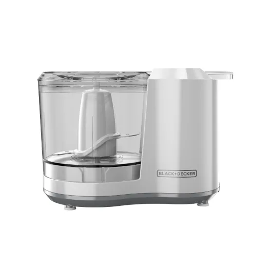
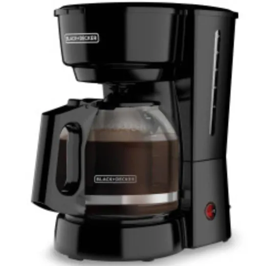
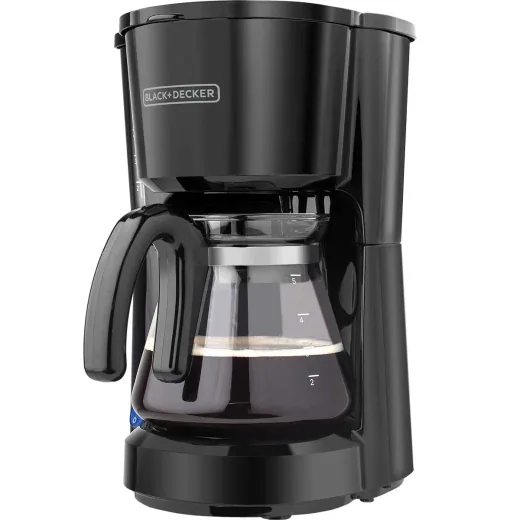
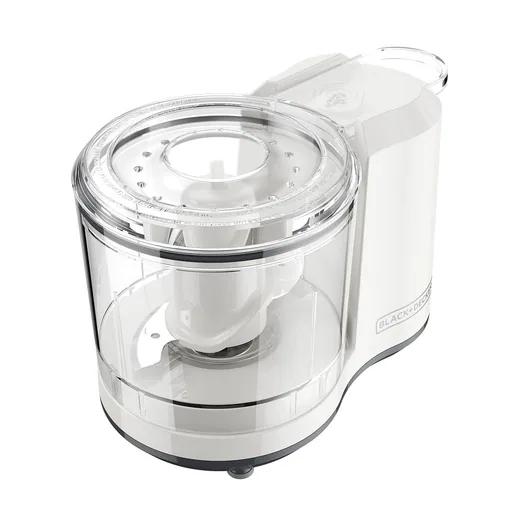
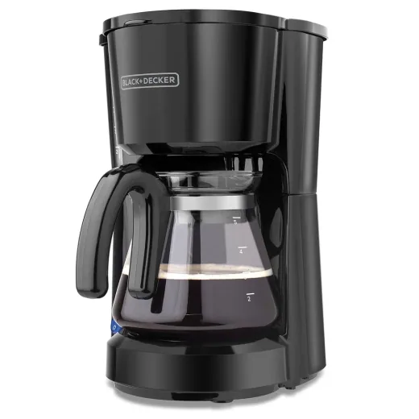
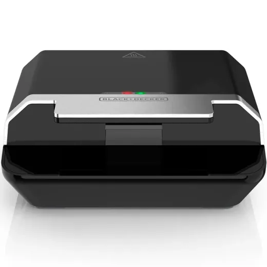
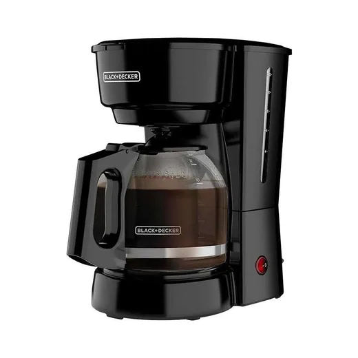
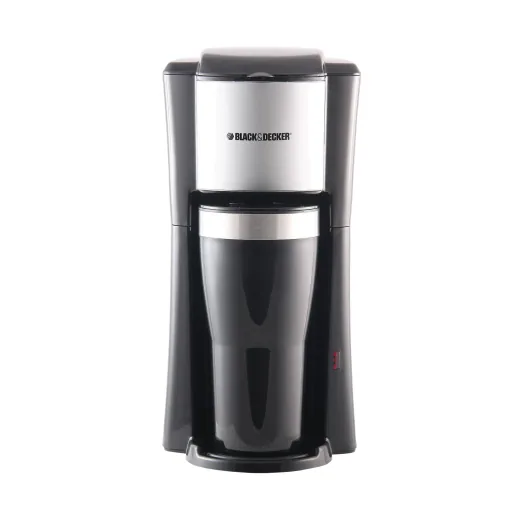
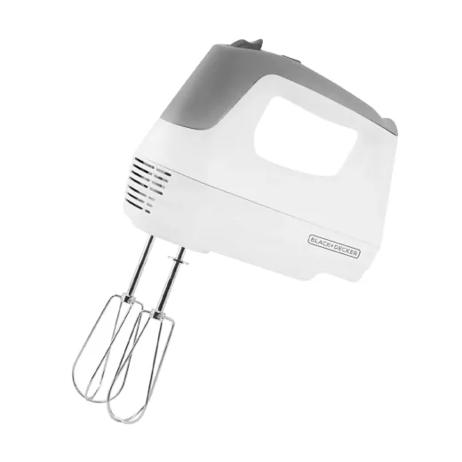

Inicio › Licuadoras y cafeteras

Black+Decker · Modelo HC150W
Procesador de alimentos Black + Decker 70 W 1.5 tazas Blanco HC150W
L 597
En La Curacao
Precio en cada tienda
| Tienda | Precio | Antes | Disponibilidad | |
|---|---|---|---|---|
| La Curacao | L 597 | Disponible | Ver en tienda › |
Precios referenciales tomados de cada tienda el 14 de noviembre de 2026. El precio válido es el que muestra la tienda al comprar.
Otros licuadoras y cafeteras Black+Decker

Cafetera Black + Decker 12 Tazas Negro CM0916BL 597En 2 tiendas · más barato en La Curacao
Cafetera Black + Decker 5 tazas Negro CM0701BL 595En 2 tiendas · más barato en Gallo más Gallo
Procesador de Alimentos Black+Decker 1.5L 629En 2 tiendas · más barato en Walmart
Cafetera Black & Decker de 5 TazasL 545En Walmart
Sandwichera Black+Decker 750W SM602FL 667En 3 tiendas · más barato en La Curacao
Cafetera Black+Decker 12 Tazas con TecnoL 679En Diunsa
Cafetera Black & Decker 1 taza CM618L 695En Gallo más Gallo
Batidora de mano Black + Decker 175 W 1.5 L Blanco MX1500WL 700En La Curacao